3 Catch per unit effort
# Length data
LengthImport <- read_csv("observer_lengths_mas102m.csv")
LengthData <- inner_join(ObserverData,
LengthImport,
by = c("TripID", "DragID2", "LatinNames"))
# Creating Table
SummaryTable2 <- ObserverData %>%
group_by(TripID,
Company,
DragID2,
Departure,
Month,
TimePeriods,
FishingZones,
FishingDepthMtr,
Arrival) %>%
dplyr::summarise(SumWeightsKG = round(sum(TotalWeightKG),2),
MeanEffortHr = round(mean(TimeFishedDec),2),
CpueKGHr = round(SumWeightsKG/MeanEffortHr,2),
CountSpecies = n(),
.groups = 'drop') %>%
mutate(PropWeight = round(SumWeightsKG/sum(SumWeightsKG),2)) %>% arrange(DragID2)3.1 All species
ggplot(data = SummaryTable,
aes(x = CpueKGHr,
fill = CatchCategory)) +
geom_histogram(bins = 20) +
theme_bw() +
theme(panel.background = element_rect(fill = "white",
colour = "grey50"),
legend.position = "none") +
labs(x = "CPUE (kgs/hr)",
y = "Count",
title = "Histograms of CPUE for all species observations",
subtitle = "Colour is used to represent the different catch groups") +
facet_wrap(~CatchCategory,
scales = "free",
ncol = 1) 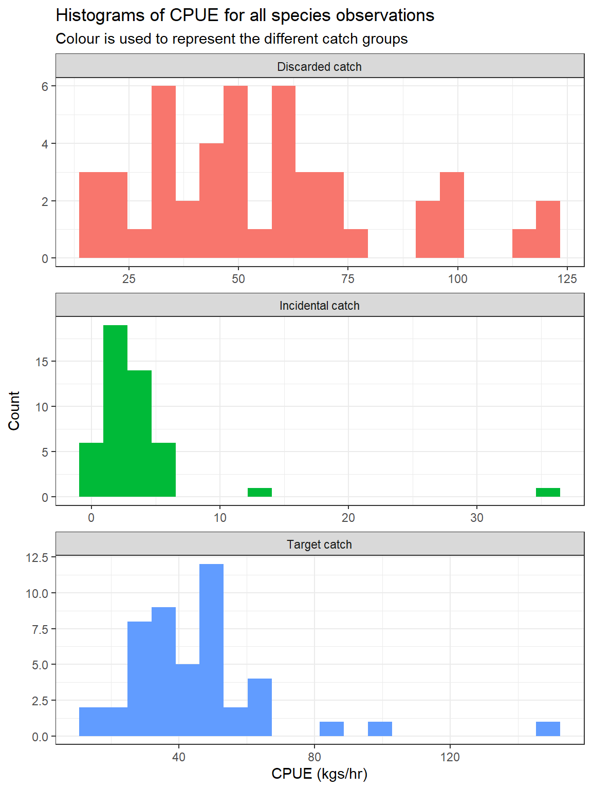
3.1.1 Bottom trawl tows
ObserverData2 <- ObserverData %>%
group_by(DragID2,
CatchCategory) %>%
dplyr::summarise(Mean.cpue = mean(CpueKGHR),
Mean.cpue.sd = sd(CpueKGHR),
Count = n(),
Mean.cpue.se = Mean.cpue.sd/sqrt(Count),
.groups = 'drop')
ggplot(data = ObserverData2,
aes(x = as.factor(DragID2),
y = Mean.cpue,
color = CatchCategory,
shape = CatchCategory,
group = 1)) +
geom_point() +
geom_line() +
geom_errorbar(aes(ymin = Mean.cpue - Mean.cpue.se,
ymax = Mean.cpue + Mean.cpue.se),
width = .5) +
theme_bw() +
theme(panel.background = element_rect(fill = "white",
colour = "grey50"),
legend.position = "none",
axis.text.x = element_text(angle = 90)) +
labs(x="Bottom Trawl Tows",
y = "Mean CPUE (kgs/hr)",
title = "Line plots of the mean CPUE(with SE bars) for all species observations \nacross bottom trawl tows",
subtitle = "Colour is used to represent the different catch groups") +
facet_wrap(~CatchCategory,
scales = "free",
ncol = 1)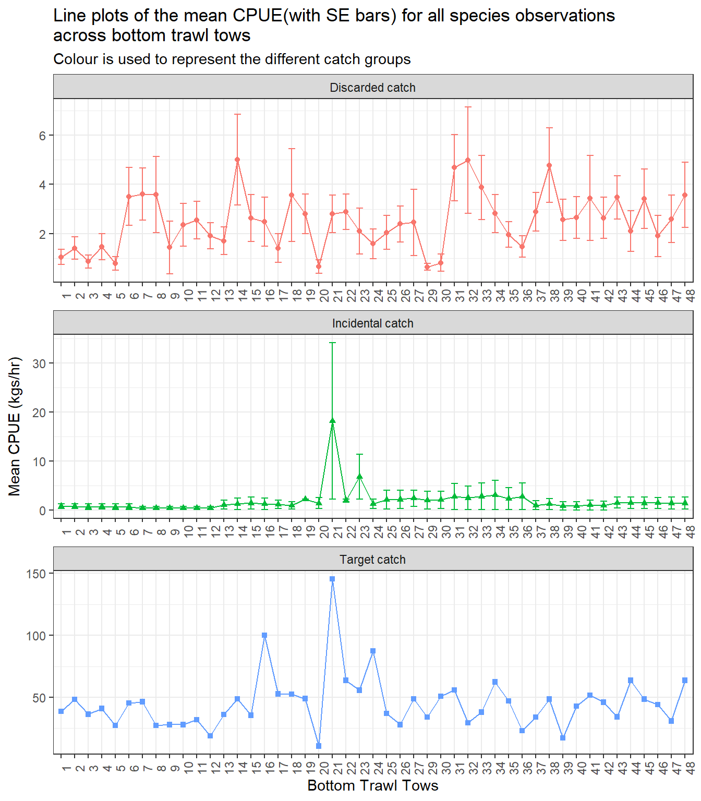
3.1.2 Fishing Depths
ObserverData3 <- ObserverData %>%
group_by(FishingDepthMtr,
CatchCategory) %>%
dplyr::summarise(Mean.cpue = mean(CpueKGHR),
Mean.cpue.sd = sd(CpueKGHR),
Count = n(),
Mean.cpue.se = Mean.cpue.sd/sqrt(Count),
.groups = 'drop')
ggplot(data = ObserverData3,
aes(x = as.factor(FishingDepthMtr),
y = Mean.cpue,
color = CatchCategory,
shape = CatchCategory,
group = 1)) +
geom_point() +
geom_line() +
geom_errorbar(aes(ymin = Mean.cpue - Mean.cpue.se,
ymax = Mean.cpue + Mean.cpue.se),
width = .1) +
theme_bw() +
theme(panel.background = element_rect(fill = "white",
colour = "grey50"),
legend.position = "none",
axis.text.x = element_text(angle = 90)) +
labs(x="Fishing Depths (m)",
y = "Mean CPUE (kgs/hr)",
title = "Line plots of mean CPUE(with SE bars) for all species observations across \nfishing depths",
subtitle = "Colour is used to represent the different catch groups") +
facet_wrap(~CatchCategory,
scales = "free",
ncol = 1) 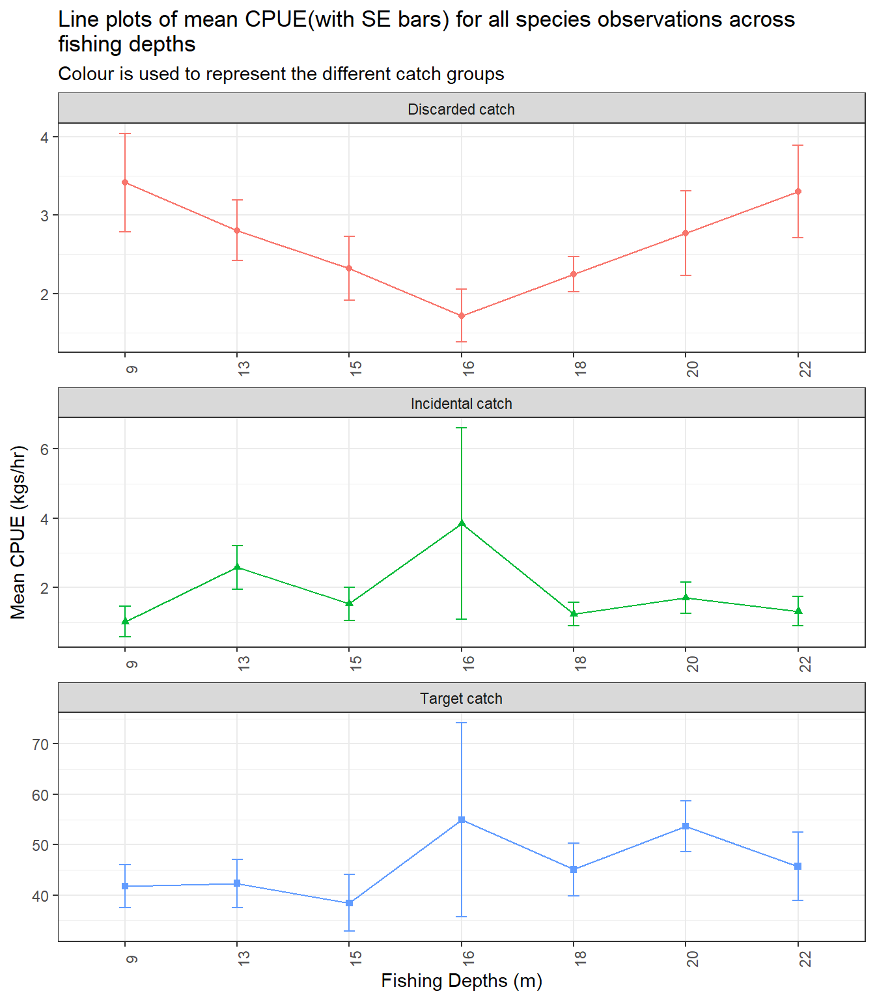
3.1.3 Time of day
ObserverData5 <- ObserverData %>%
group_by(TimePeriods,
CatchCategory) %>%
dplyr::summarise(Mean.cpue = mean(CpueKGHR),
Mean.cpue.sd = sd(CpueKGHR),
Count = n(),
Mean.cpue.se = Mean.cpue.sd/sqrt(Count),
.groups = 'drop')
ggplot(data = ObserverData5,
aes(x = TimePeriods,
y = Mean.cpue,
fill = CatchCategory)) +
geom_col(width = 0.2) +
geom_errorbar(aes(ymin = Mean.cpue - Mean.cpue.se,
ymax = Mean.cpue + Mean.cpue.se),
width = .05) +
scale_fill_brewer(palette = "Set2") +
theme_bw() +
theme(panel.background = element_rect(fill = "white",
colour = "grey50"),
legend.position = "none",
axis.text.x = element_text(angle = 90)) +
labs(x = "Time of day",
y = "Mean CPUE (kgs/hr)",
title = "Barplots of mean CPUE(with SE bars) for all species \nobservations across time of day",
subtitle = "Colour is used to represent the different catch groups") +
facet_wrap(~CatchCategory,
scales = "free",
ncol = 1) 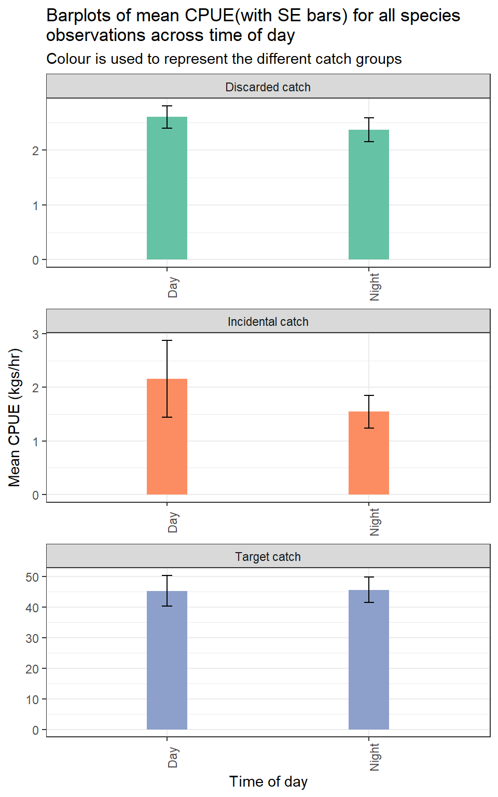
3.1.4 Company
ObserverData5 <- ObserverData %>%
group_by(Company,
CatchCategory) %>%
dplyr::summarise(Mean.cpue = mean(CpueKGHR),
Mean.cpue.sd = sd(CpueKGHR),
Count = n(),
Mean.cpue.se = Mean.cpue.sd/sqrt(Count),
.groups = 'drop')
ggplot(data = ObserverData5,
aes(x = Company,
y = Mean.cpue,
fill = CatchCategory)) +
geom_col(width = 0.2) +
geom_errorbar(aes(ymin = Mean.cpue - Mean.cpue.se,
ymax = Mean.cpue + Mean.cpue.se),
width = .05) +
scale_fill_brewer(palette = "Set3", direction = -1) +
theme_bw() +
theme(panel.background = element_rect(fill = "white",
colour = "grey50"),
legend.position = "none",
axis.text.x = element_text(angle = 90)) +
labs(x="Company",
y = "Mean CPUE (kgs/hr)",
title = "Barplots of mean CPUE(with SE bars) for all species \nobservations across fishing companies",
subtitle = "Colour is used to represent the different catch groups") +
facet_wrap(~CatchCategory,
scales = "free",
ncol = 1) 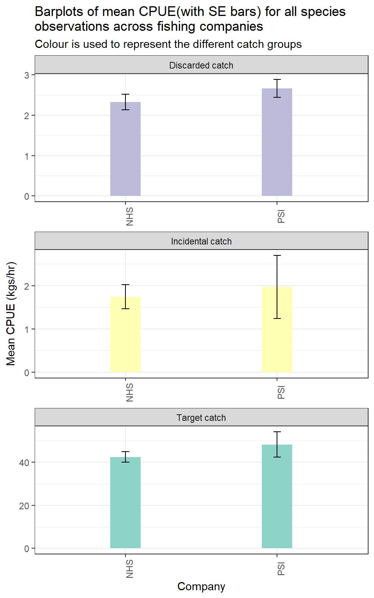
3.1.5 Months
ObserverData6 <- ObserverData %>%
group_by(Month,
CatchCategory) %>%
dplyr::summarise(Mean.cpue = mean(CpueKGHR),
Mean.cpue.sd = sd(CpueKGHR),
Count = n(),
Mean.cpue.se = Mean.cpue.sd/sqrt(Count),
.groups = 'drop')
ggplot(data = ObserverData6,
aes(x = as.factor(Month),
y = Mean.cpue,
color = CatchCategory,
shape = CatchCategory,
group = 1)) +
geom_point() +
geom_line() +
geom_errorbar(aes(ymin = Mean.cpue - Mean.cpue.se,
ymax = Mean.cpue + Mean.cpue.se),
width = .1) +
geom_point() +
geom_line() +
theme_bw() +
theme(panel.background = element_rect(fill = "white",
colour = "grey50"),
legend.position = "none",
axis.text.x = element_text(angle = 90)) +
labs(x="Months",
y = "Mean CPUE (kgs/hr)",
title = "Line plots of mean CPUE(with SE bars) for all species observations across \nmonths",
subtitle = "Colour is used to represent the different catch groups") +
facet_wrap(~CatchCategory,
scales = "free",
ncol = 1) 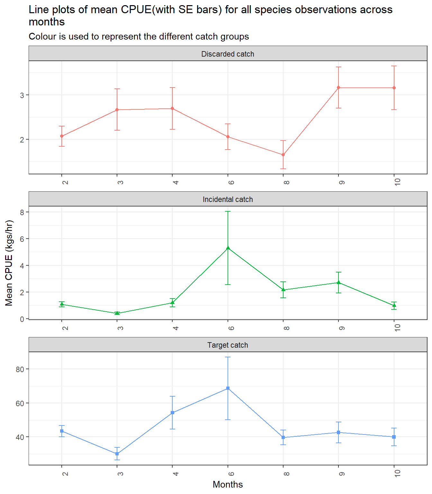
3.1.6 Checking if code worked using Months…
# A tibble: 6 x 6
Month CatchCategory Mean.cpue Mean.cpue.sd Count Mean.cpue.se
<dbl> <chr> <dbl> <dbl> <int> <dbl>
1 2 Discarded catch 2.07 3.51 242 0.226
2 2 Incidental catch 1.08 0.988 24 0.202
3 2 Target catch 43.5 11.5 12 3.32
4 3 Discarded catch 2.67 5.15 123 0.464
5 3 Incidental catch 0.406 0.334 12 0.0965
6 3 Target catch 30.1 9.04 6 3.69Test.data <- ObserverData %>%
filter(CatchCategory == "Discarded catch" & Month == 2)
sd(Test.data$CpueKGHR)/sqrt(length(Test.data$CpueKGHR)) # sd/sqrt(n) [1] 0.2257962# Plot
names <- unique(ObserverData6$CatchCategory)
for(i in names){
Check.data <- ObserverData %>%
filter(CatchCategory == i) %>%
group_by(Month,
CatchCategory) %>%
dplyr::summarise(Mean.cpue = mean(CpueKGHR),
Mean.cpue.sd = sd(CpueKGHR),
Count = n(),
Mean.cpue.se = Mean.cpue.sd/sqrt(Count),
.groups = 'drop')
plots <- ggplot(data = Check.data,
aes(x = as.factor(Month),
y = Mean.cpue,
color = CatchCategory,
shape = CatchCategory,
group = 1)) +
geom_point() +
geom_line() +
geom_errorbar(aes(ymin = Mean.cpue - Mean.cpue.se,
ymax = Mean.cpue + Mean.cpue.se),
width = .1) +
geom_point() +
geom_line() +
theme_bw() +
theme(panel.background = element_rect(fill = "white",
colour = "grey50"),
legend.position = "none",
axis.text.x = element_text(angle = 90)) +
labs(x="Months",
y = "Mean CPUE (kgs/hr)",
title = paste0("Line plots of the mean ",i ," CPUE \n(with SE bars) for all species observations across \nmonths"))
print(plots)
}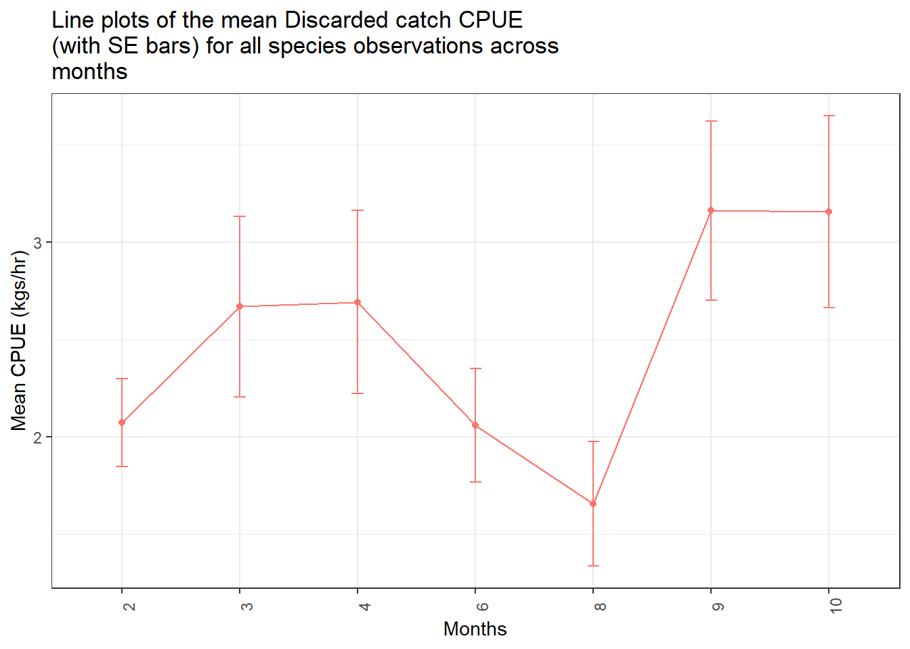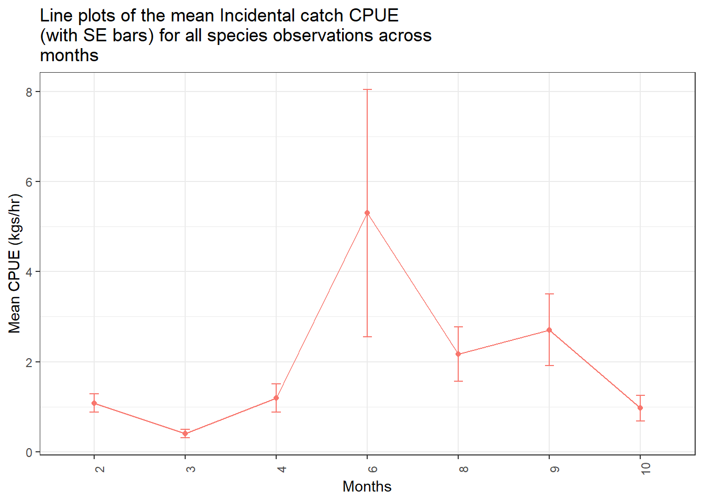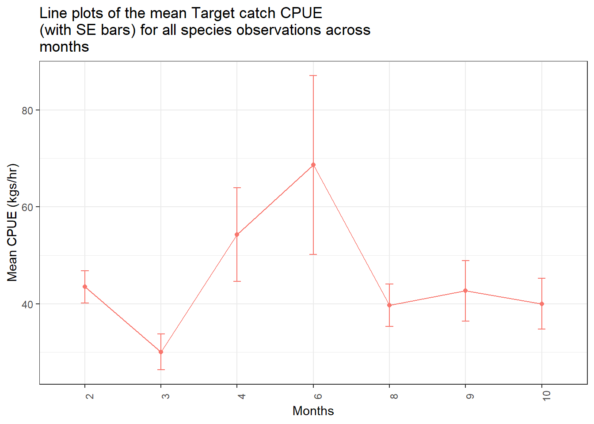
[1] "Month" "CatchCategory" "Mean.cpue" "Mean.cpue.sd"
[5] "Count" "Mean.cpue.se"3.1.7 Fishing Zones
ObserverData7 <- ObserverData %>%
group_by(FishingZones,
CatchCategory) %>%
dplyr::summarise(Mean.cpue = mean(CpueKGHR),
Mean.cpue.sd = sd(CpueKGHR),
Count = n(),
Mean.cpue.se = Mean.cpue.sd/sqrt(Count),
.groups = 'drop')
ggplot(data = ObserverData7,
aes(x = as.factor(FishingZones),
y = Mean.cpue,
fill = CatchCategory,
color = CatchCategory,
shape = CatchCategory,
group = 1)) +
geom_point() +
geom_line() +
geom_errorbar(aes(ymin = Mean.cpue - Mean.cpue.se,
ymax = Mean.cpue + Mean.cpue.se),
width = .1) +
theme_bw() +
theme(panel.background = element_rect(fill = "white",
colour = "grey50"),
legend.position = "none",
axis.text.x = element_text(angle = 90)) +
labs(x = "Fishing Zones",
y = "Mean CPUE (kgs/hr)",
title = "Line plots of mean CPUE(with SE bars) for all species observations across \nfishing zones",
subtitle = "Colour is used to represent the different catch groups") +
facet_wrap(~CatchCategory,
scales = "free",
ncol = 1) 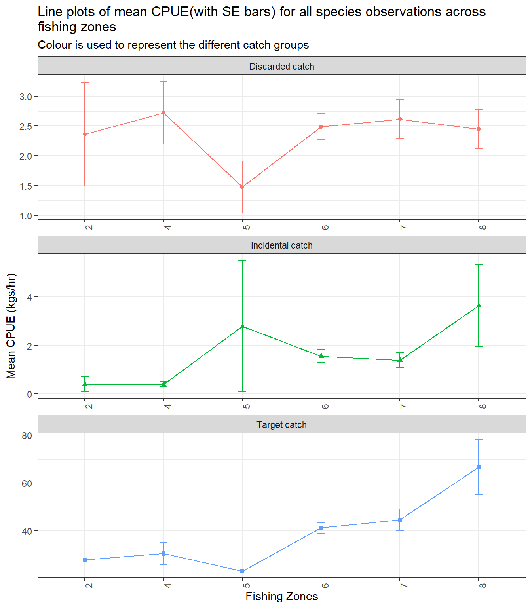
3.2 Species CPUE
# Names to remove
Remove <- c("Multiple species finfish", "Multiple species prawns", "Xiphopenaeus kroyeri")
# Data
Top10Species <- ObserverData %>%
group_by(LatinNames, CommonName) %>%
dplyr::summarise(NoSampled = n(),
.groups = 'drop') %>%
filter(NoSampled >= 10) %>%
filter(!LatinNames %in% Remove) %>%
arrange(desc(NoSampled)) %>%
head(10)
# Creating a vector of names
Top10names <- Top10Species$LatinNames
# Filtering data to keep species
FilteredSpecies <- ObserverData %>%
filter(LatinNames %in% Top10names) %>%
group_by(DragID2) %>%
mutate(PropWeight = round(CpueKGHR/sum(CpueKGHR),5)) %>%
mutate(LatinNames = fct_relevel(LatinNames, Top10names))
# Plotting species
ggplot(data = FilteredSpecies,
aes(x = reorder(LatinNames,
CpueKGHR,
FUN = median),
y = CpueKGHR,
fill = LatinNames)) +
geom_boxplot() +
stat_boxplot(geom = 'errorbar', width = 0.2) +
# scale_y_continuous(trans='log10') +
ylim(0, 30) +
scale_fill_brewer(palette = "Set3") +
theme_bw() +
theme(panel.background = element_rect(fill = "white",
colour = "grey50"),
legend.position = "none") +
labs(x = "Species",
y = "CPUE (kgs/hr)",
title = "Boxplot of CPUE data for the Top 10 species",
subtitle = "These species were in at least 10 fishing trips \n4 observations above 30 kgs/hr were removed") +
coord_flip()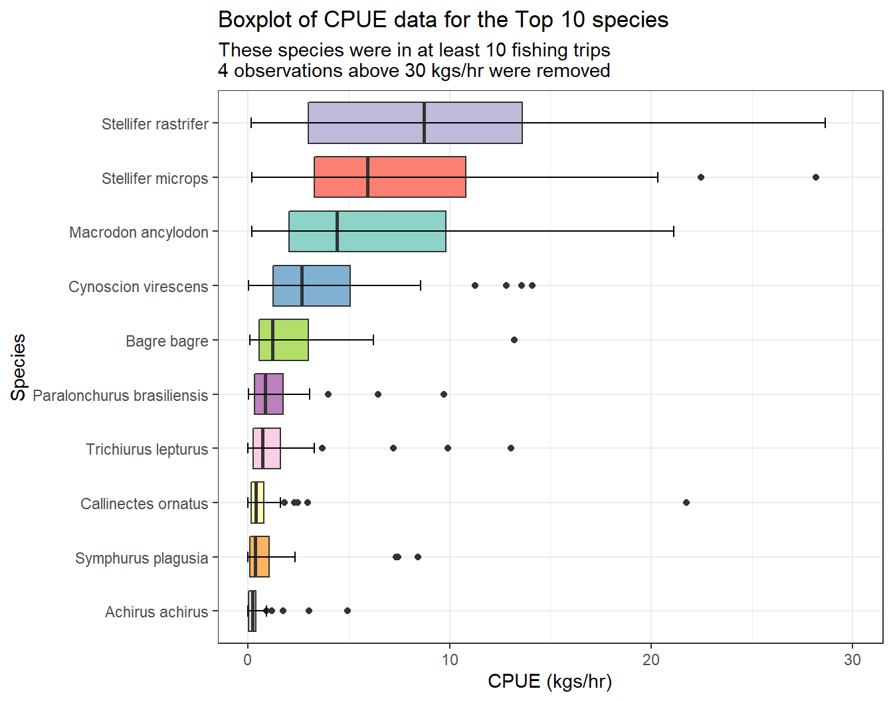
3.2.1 Species by bottom trawl tows
ggplot(data = FilteredSpecies,
mapping = aes(x = as.factor(DragID2),
y = PropWeight,
fill = LatinNames)) +
geom_col(width = 0.9) +
theme_bw() +
theme(legend.position = "bottom",
axis.text.x = element_text(angle = 90,
vjust = 0.5,
hjust = 0.1)) +
labs(x = "Bottom Trawl Tows",
y = "Proportions",
title = "Stacked barplot of the top 10 species proportion change across bottom trawl tows",
subtitle = "Colour is used to represent the different species ") +
scale_fill_brewer(palette = "Paired",
name = " ") 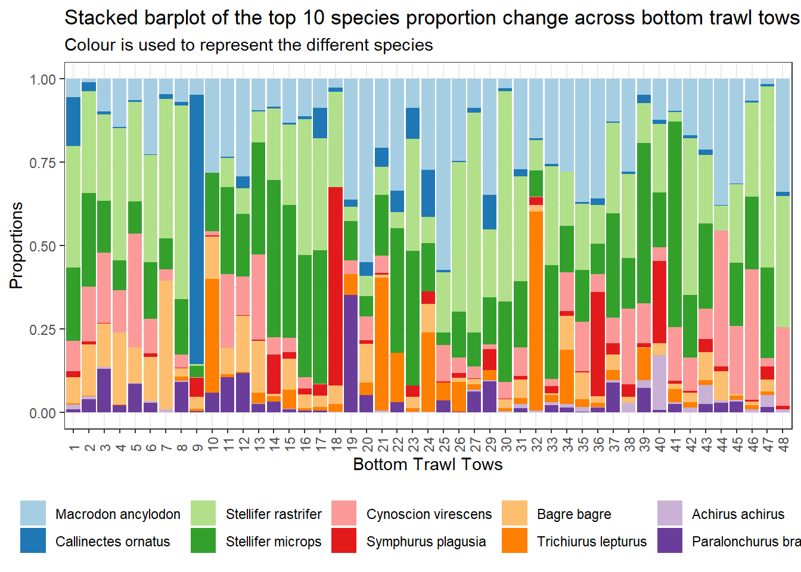
3.3 Histogram of Top 10 species CPUE
ggplot(data = FilteredSpecies,
aes(x = CpueKGHR,
fill = as.factor(LatinNames))) +
geom_histogram(bins = 20) +
theme_bw() +
theme(panel.background = element_rect(fill = "white",
colour = "grey50"),
legend.position = "none") +
labs(x = "CPUE (kgs/hr)",
y = "Count",
title = "Histograms of all CPUE observations for the Top 10 species",
subtitle = "Colour is used to represent the different species") +
facet_wrap(~LatinNames,
scales = "free",
ncol = 2)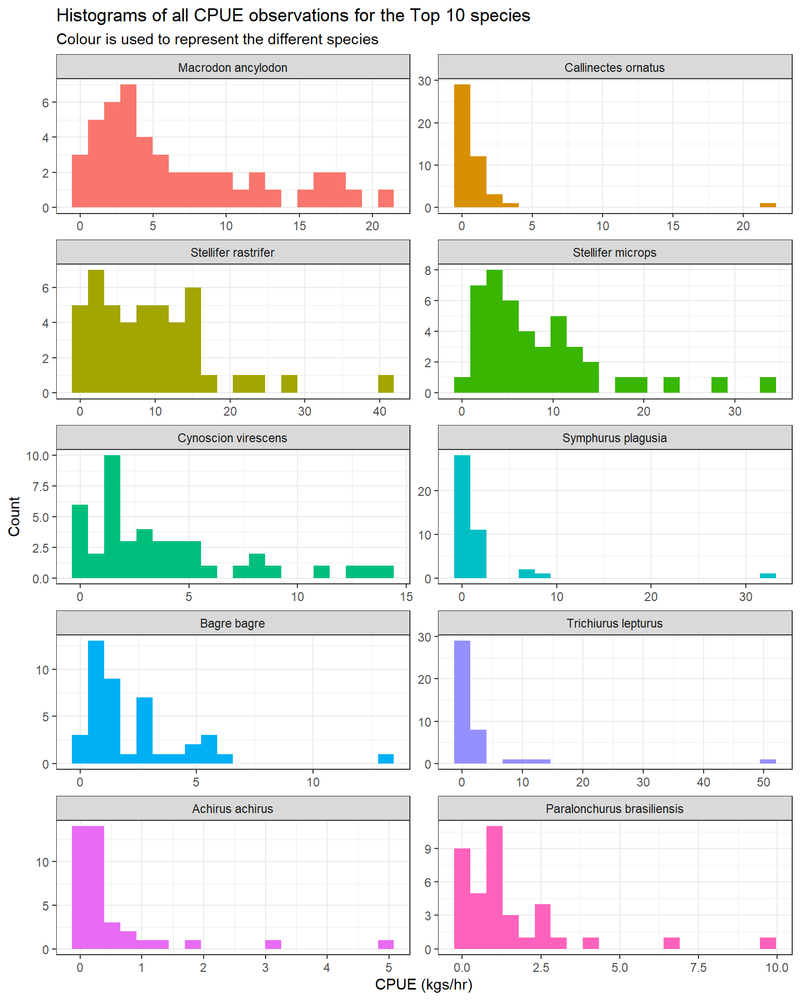
3.4 Weight proportions for the Top 10 Discard Species across fishing tows
3.4.1 Tables
3.4.2 Plots
FilteredSpecies %>%
# filter(LatinNames == "Callinectes ornatus") %>%
# filter(!DragID2 == 9) %>%
ggplot(aes(x = as.factor(DragID2),
y = PropWeight,
fill = LatinNames)) +
geom_bar(stat = "identity") +
labs(x = "Bottom trawl tows",
y = "Proportion of CPUE") +
theme_bw() +
theme(legend.position = "none",
axis.text.y = element_text(size = 8)) +
guides(fill = guide_legend(title = "Latin Name")) +
coord_flip() +
facet_wrap(~LatinNames)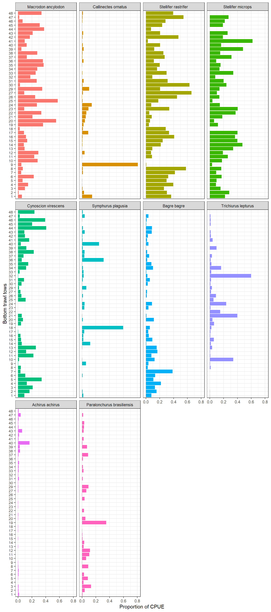
3.5 Species Length Table
# Creating species length table
SpeciesLengths <- LengthData %>%
group_by(LatinNames) %>%
dplyr::summarise(NoMeasured = n(),
MeanLength = round(mean(Lengths)),
MedianLength = round(median(Lengths)),
SDLength = round(sd(Lengths)),
MaxLength = round(max(Lengths)),
MinLength = round(min(Lengths)),
.groups = 'drop') %>%
arrange(desc(NoMeasured))
# Printing table
SpeciesLengths %>%
kbl() %>%
kable_classic() %>%
row_spec(0, bold = TRUE) %>%
kable_styling(fixed_thead = T,
bootstrap_options = "condensed")| LatinNames | NoMeasured | MeanLength | MedianLength | SDLength | MaxLength | MinLength |
|---|---|---|---|---|---|---|
| Stellifer rastrifer | 989 | 10 | 9 | 3 | 24 | 2 |
| Stellifer microps | 718 | 12 | 12 | 4 | 23 | 2 |
| Macrodon ancylodon | 480 | 17 | 17 | 5 | 31 | 6 |
| Nebris microps | 262 | 13 | 12 | 4 | 27 | 6 |
| Bagre bagre | 239 | 12 | 9 | 6 | 38 | 5 |
| Cynoscion virescens | 215 | 18 | 18 | 4 | 33 | 8 |
| Lonchurus elegans | 122 | 22 | 23 | 4 | 30 | 7 |
| Harengula jaguana | 121 | 11 | 11 | 3 | 30 | 5 |
| Symphurus plagusia | 120 | 13 | 13 | 2 | 17 | 7 |
| Paralonchurus brasiliensis | 89 | 11 | 10 | 3 | 25 | 5 |
| Larimus breviceps | 62 | 19 | 19 | 3 | 23 | 11 |
| Anchoa spinifer | 30 | 12 | 11 | 2 | 17 | 9 |
| Trichiurus lepturus | 30 | 60 | 60 | 6 | 70 | 50 |
3.6 Visualising Lenght Measurements
# Plotting data
LengthData %>%
filter(!LatinNames == "Trichiurus lepturus") %>%
ggplot(aes(x = reorder(LatinNames,
Lengths,
FUN = median),
y = Lengths,
fill = LatinNames)) +
geom_boxplot(show.legend = FALSE) +
stat_boxplot(geom = 'errorbar', width = 0.2) +
theme_bw() +
scale_fill_brewer(palette = "Paired") +
coord_flip() +
labs(y = "Lengths (cm)",
x = NULL,
title = "Box plot of species lengths for the species meaured",
subtitle = "Trichiurus lepturus (the largest) was removed to better see the distributions")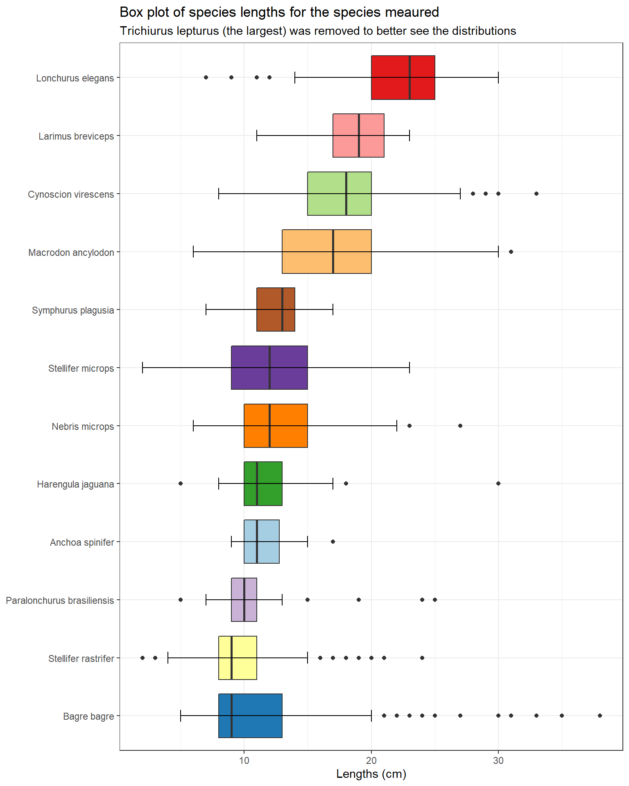
# Plot of single species
LengthData %>%
filter(LatinNames == "Trichiurus lepturus") %>%
ggplot(aes(x = reorder(LatinNames,
Lengths,
FUN = median),
y = Lengths,
fill = LatinNames)) +
geom_boxplot(show.legend = FALSE, width = 0.3) +
stat_boxplot(geom = 'errorbar', width = 0.2) +
theme_bw() +
scale_fill_brewer(palette = "Paired") +
labs(y = "Lengths (cm)",
x = NULL,
title = "Box plot of Trichiurus lepturus lengths")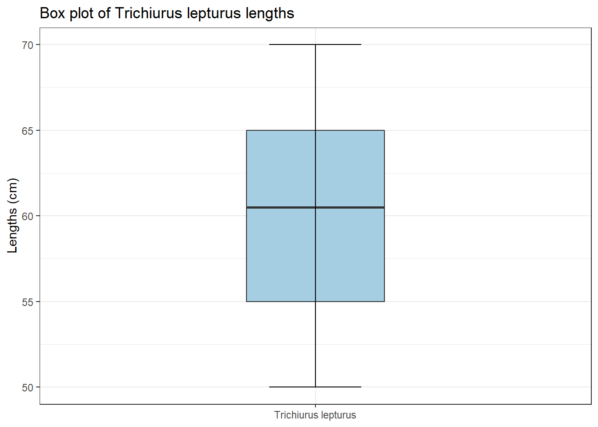